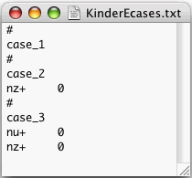

MyQFogWork.
KinderEcases.txt that reads as follows:

Store the file KinderEcases.txt inside the folder
MyQFogWork. The meaning of this file is that we want to run
3 different e-cases called "case_1", "case_2", and "case_3".
MyQFogWork.
<prefix>Ecases.txt.
<prefix>NodeProbs.txt
<prefix>BinodeProbs.txt
<prefix>Stories.txt
KinderEcases.txt file:
MyQFogWork. Open the TEXT files entitled:
KinderNodeProbs.txt, KinderBinodeProbs.txt, and
KinderStories.txt.
The Quantum Fog Distribution contains a folder entitled
QFogLibOfNets (contains many examples of quantum nets) and a
pdf file entitled QFogLibOfEssays.pdf (contains an essay explaining
each net found in the QFogLibOfNets folder). At this point,
you might want to look at the examples, and consult this manual whenever
you have any questions about Quantum Fog. Or you might want to finish the
manual now, and look at the examples later.